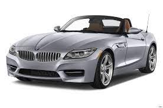

BMW
CARS
“Sheer Driving Pleasure”: the history of the BMW slogan. For over half a century, this claim has been synonymous with the BMW driving experience. But how did the iconic slogan come about? And why is it more relevant today than ever? The answers are revealed in this brief journey through BMW’s history.
